Komplexní dodávky pro stavbu a regeneraci domů v Olomouci – plastová okna GEALAN, hliníkové dveře ALIPLAST, dveře PORTA DOORS, podlahy MEISTER, vrata, žaluzie a zateplování
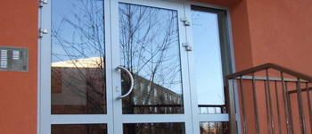
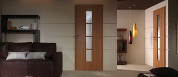
Veškeré autentické informace, historie, provozní údaje a identifikační data naší společnosti.
Společnost STAVOFLOOR, s.r.o. se sídlem na ulici Babíčkova 1043/23 v Olomouci (IČO 25861731, jednatel Ing. Petr Šťastný) působí na trhu již od roku 2000 jako stabilní dodavatel výplní stavebních otvorů, podlahových krytin, stínící techniky a kompletní regenerace bytových a panelových domů.
Jsme držiteli certifikátu systému managementu jakosti ČSN EN ISO 9001:2009 a odborným dodavatelem registrovaným v dotačních programech Zelená úsporám. Pro společenství vlastníků jednotek (SVJ), bytová družstva, města, školy i majitele rodinných domů zajišťujeme zakázky na klíč včetně demontáže, ekologické likvidace, montáže, zednického zapravení a záručního i pozáručního servisu.
Spolupracujeme výhradně s prověřenými evropskými výrobci systémů: plastové profily GEALAN (Německo), hliníkové systémy ALIPLAST, interiérové a bezpečnostní dveře PORTA DOORS, německé dřevěné a laminátové podlahy MEISTER a špičkovou venkovní i vnitřní stínící techniku.
| Obchodní firma | STAVOFLOOR, s.r.o. |
| Sídlo a vzorkovna | Babíčkova 1043/23, 779 00 Olomouc |
| IČO / DIČ | 25861731 / CZ25861731 |
| Vedení společnosti | Ing. Petr Šťastný (+420 602 745 969) |
| Pevná linka / E-mail | +420 585 228 603 | stavofloor@stavofloor.cz |
| Certifikace | ČSN EN ISO 9001:2009 | Odborný dodavatel Zelená úsporám | Snížená sazba DPH pro bytovou výstavbu |
Vybudování obchodního a montážního zázemí na ulici Babíčkova 1043/23 v Olomouci.
Zavedení přísných standardů kontroly kvality pro dodávky a montáže oken, dveří, podlah a zateplení budov.
Výměny vchodových hliníkových portálů ALIPLAST, oken GEALAN, zateplení fasád a rekonstrukce podlah ve školách a úřadech.
Zákazník nemusí koordinovat 5 různých firem – okna, dveře, podlahy, garážová vrata, rolety, žaluzie i fasádu dodáme komplexně.
Kompletní rozpis všech kategorií, materiálů, technologií a služeb podle našeho katalogu.
Špičkový 6komorový německý profilový systém GEALAN S 8000 IQ se stavební hloubkou 74 mm zaručuje vynikající tepelnou a zvukovou izolaci i vysokou statickou tuhost díky masivním ocelovým výztuhám.
Vysoce odolné hliníkové vstupní portály pro panelové a bytové domy (SVJ), administrativní budovy, školy a rodinné domy ze systémů ALIPLAST Imperial, Superial a Econoline.
Autorizovaný prodej a odborná montáž interiérových, vchodových bytových, protipožárních a bezpečnostních dveří a zárubní největšího středoevropského výrobce PORTA DOORS.
Prodej a profesionální pokládka kompletního sortimentu podlahových krytin pro byty, rodinné domy i komerční budovy, školy a zdravotnická zařízení.
Kompletní exteriérová i interiérová stínící technika a sekční garážová či průmyslová vrata s elektrickým pohonem.
Kompletní obnova obálky budov – certifikované kontaktní zateplovací systémy (ETICS), opravy lodžií a balkonů a výměny výplní otvorů.
Přehledně zpracované kompletní tabulky, ceníky, technické specifikace a referenční zakázky.
Konkrétní technická data z katalogových listů původního webu.
| Produktová řada | Systém / Výrobce | Technická specifikace a parametry |
|---|---|---|
| Plastová okna a balkónové dveře | GEALAN S 8000 IQ (Německo) | 6komorový profil, stavební hloubka 74 mm, Uf = 1,1 W/m²K, masivní ocelová výztuha, dvojsklo/trojsklo |
| Hliníkové dveře a stěny | ALIPLAST Imperial / Superial / Econoline | Tříkomorové hliníkové profily s přerušeným tepelným mostem (šířka 65 / 75 mm), vysoká tuhost pro vstupy SVJ |
| Interiérové a bytové dveře | PORTA DOORS (Koncept, Toledo, Sevilla, RC2/RC3) | Falcové i bezfalcové provedení, protipožární EI 30, akustický útlum až 42 dB, obložkové zárubně Porta System |
| Dřevěné a laminátové podlahy | MEISTER (Německo) + komerční PVC | Třívrstvé dřevěné podlahy na HDF desce (zamek Masterclic Plus), zátěžové lamináty a heterogenní PVC |
| Venkovní žaluzie | Typy Z-90, C-80 a Z-70 | Lamely šíře 90, 80 a 70 mm s těsněním pro tichý chod a dokonalé zatemnění, motorické či ruční ovládání |
| Předokenní rolety a markýzy | Hliníkové zateplené rolety & terasové markýzy | PU pěnová výplň lamel, snížení úniku tepla o 30 % a hluku o 10 dB; markýzy s akrylátovou impregnovanou látkou |
Ukázka realizovaných výměn oken, hliníkových vchodových dveří, podlah a zateplení v Olomouckém kraji.
| Lokalita / Objekt | Typ investora | Rozsah provedených prací |
|---|---|---|
| Bytové a panelové domy Olomouc (ul. Janského, Schweitzerova, Pionýrská, Foerstrova, Stupkova...) | SVJ a bytová družstva | Výměna hliníkových vchodových portálů ALIPLAST, plastových oken GEALAN, schránek a zvonkových tabel |
| Bytové domy Prostějov, Přerov, Šternberk, Uničov a Litovel | Společenství vlastníků jednotek | Kompletní výměna oken v bytech i společných prostorách, vchodové dveře a zateplení fasád |
| Základní a mateřské školy, úřady a zdravotnická zařízení v Olomouci | Město / Veřejní zadavatelé | Dodávka a pokládka zátěžových PVC podlah, koberců, dveří PORTA DOORS a stínící techniky |
| Stovky rodinných domů v Olomouckém kraji | Soukromí investoři | Kompletní dodávky oken GEALAN v dřevodekorech, garážových vrat, venkovních žaluzií Z-90 a dřevěných podlah MEISTER |
Prohlédněte si kompletní databázi našich autentických fotografií. Kliknutím na libovolný snímek otevřete detailní náhled na celou obrazovku.
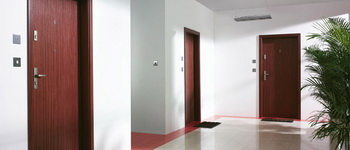
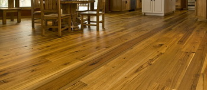
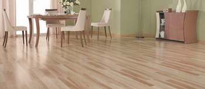
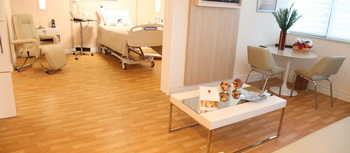
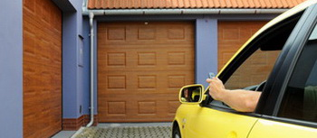
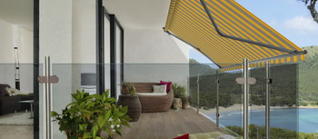
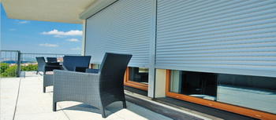
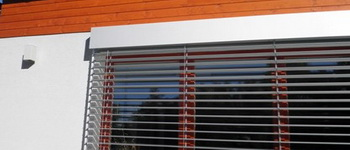
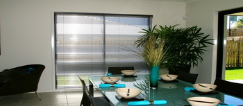
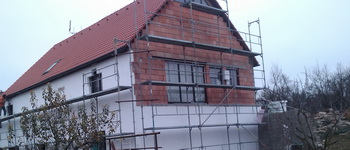
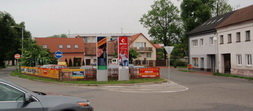
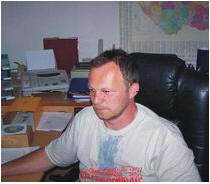
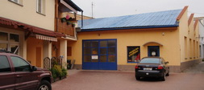
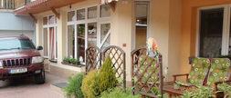
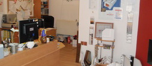
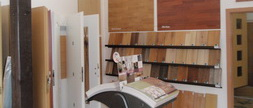
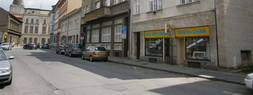
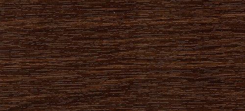
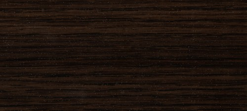
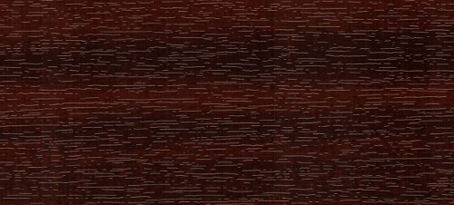
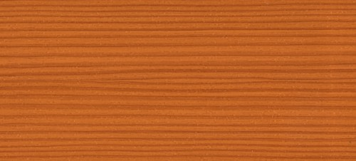
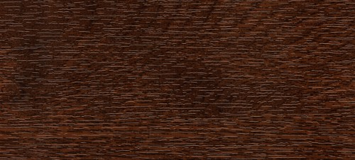
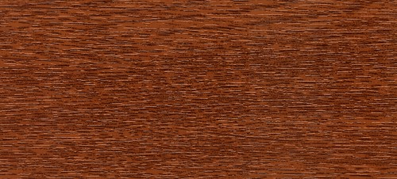
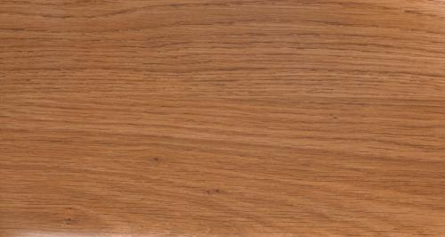
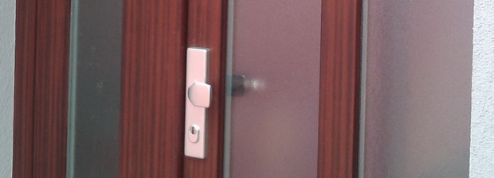
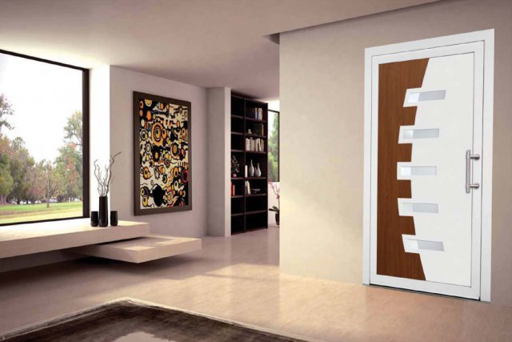
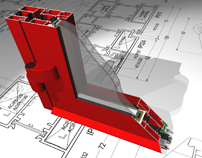
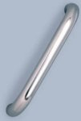
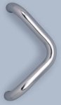
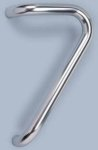
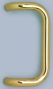
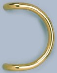
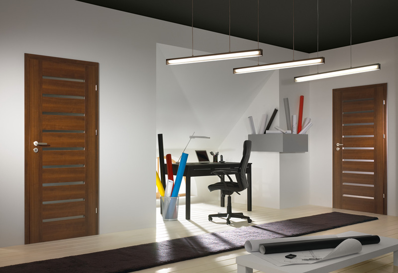
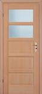
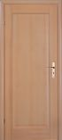
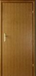
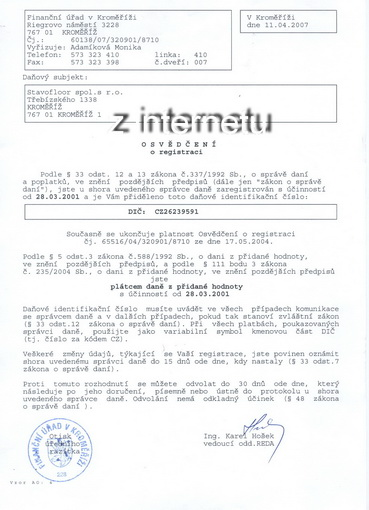
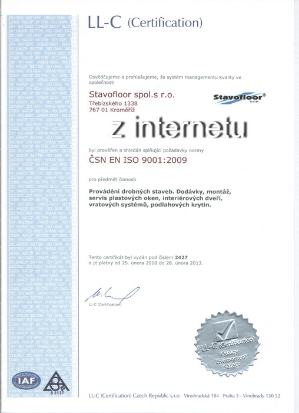
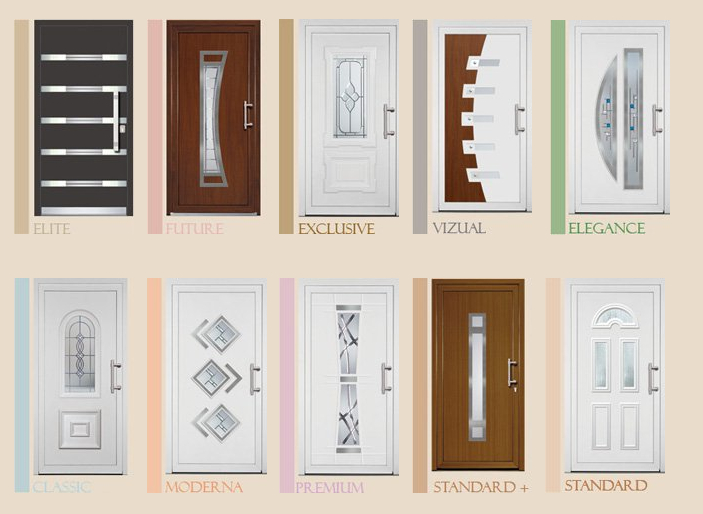
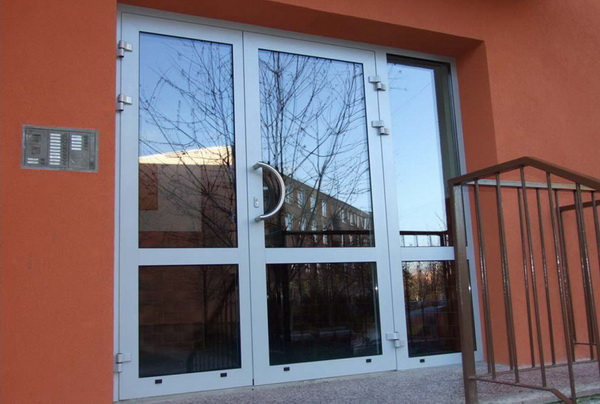
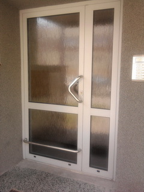
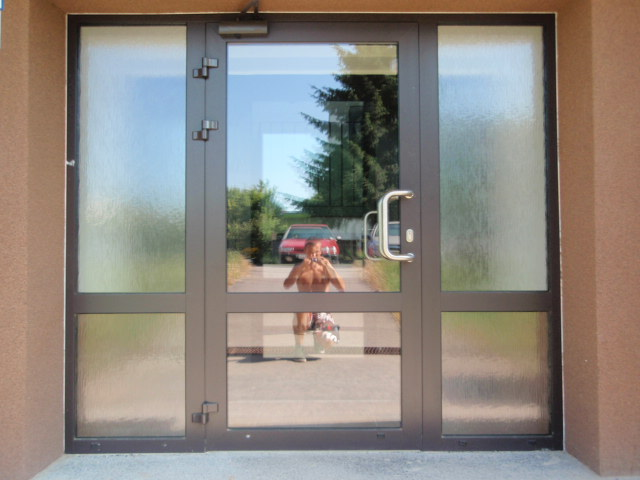
Neváhejte nám zavolat, napsat e-mail nebo nás osobně navštívit na uvedené adrese.
Babíčkova 1043/23, 779 00 Olomouc
Po–Pá: 7:30 – 16:00
IČO: 25861731 | DIČ: CZ25861731 | Doména: stavofloor.cz
Vyplňte krátký formulář níže – ozveme se vám zpět v nejbližším možném termínu.